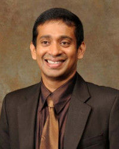
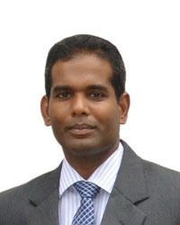
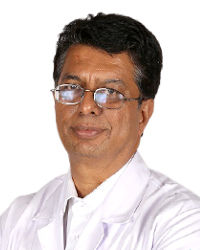
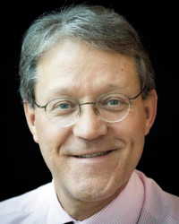
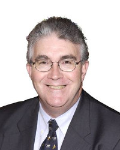

- Home
- About SASSM2017
- Programme
- Registration
- Presentation
- AbstractsNew!
- Scholarships
- Venue
- Accommodation & Tours
- Visitor Information
- Contact
Invitation
Messages
- SASSM2017
- About SASSM2017
- Messages
Message by the President Elect
The South Asian Society for Sexual Medicine (SASSM) represents sexual medicine doctors from one fourth of the world’s population. Limited access to high quality sexual medicine conferences and their cost are major concerns for doctors from our region.
In order to address these issues, the SASSM’s Scientific Committee has put together a Scientific Program on par with the best sexual medicine conferences in the world and has made an effort to make it regionally relevant too. We sincerely hope that specialists in this field, doctors from other specialties, general practitioners, psychologists, counselors and other health care providers in sexual medicine and sexology will make maximum use of the salutary developments this conference generates to improve their knowledge and clinical finesse to serve their patients even better.
I also invite you to explore and experience lovely beaches, wildlife and culture during your visit. I look forward to welcoming you to Sri Lanka in November to experience a high profile Scientific Program and warm hospitality that touches the heart!
Dr. Lasantha Malavige (MBBS, DIPM, PhD)
The President Elect SASSM
MESSAGE FROM THE CHAIRPERSON, CONGRESS ORGANISING COMMITTEE, SASSM 2017

On behalf of the Congress Organising Committee, it is my great pleasure to invite you to Colombo, Sri Lanka to attend the 3rd Biennial Meeting of the South Asian Society for Sexual Medicine (SASSM) from 19th to 21st November 2017. The Congress theme is “New Frontiers in Sexual medicine: Mind, Body & Science”.
SASSM 2017 promises to offer an exciting and a comprehensive scientific programme consisting of plenaries, symposia, instructional courses, debates, abstract driven sessions, e-posters and open discussions. The Congress will bring together experts from all over the world and the distinguished faculty will address the most recent advances and future directions in sexual medicine.
To this end, we are pleased to offer several scholarships to selected abstracts of scientific papers.
The social programme highlighting the culture of our country known as the “Pearl of the Indian Ocean” will undoubtedly make you want to visit Sri Lanka again.
We are confident that you will have a memorable stay in Colombo and we look forward to welcoming you to SASSM 2017 in November.
Dr Iyanthi Abeyewickreme
MESSAGE FROM THE CHAIRPERSON, SCIENTIFIC COMMITTEE, SASSM 2017

On behalf of the scientific committee I would like to invite you to the 3rd Biennial Meeting of the South Asian Society for Sexual Medicine (SASSM), which will be held in Colombo, Sri Lanka from 19th to 21st November 2017. The SASSM aims to develop, encourage and promote the highest scientific standards of practice, education and research in the fields of human sexuality, andrology and human sexual – reproductive function.
Following on from the preceding meetings held in India and Bangladesh, the Colombo meeting intends to further develop on the aims of the SASSM, with emphasis on the theme of the meeting, "New Frontiers in Sexual Medicine: mind, body & science ".
We intend to have a programme which will be educative to general practitioners, psychologists, psychiatrists, urologists, gynaecologists, andrologists, educators, policy makers, and many other groups who have interests in sexual medicine. The resource persons are internationally renowned experts from countries such as the United Kingdom, Netherlands, Australia, India, Bangladesh and Sri Lanka. As we expect many delegates from SASSM member countries and beyond, this meeting promises to afford all delegates the opportunity to update themselves on the latest on current topics in sexual medicine, and provide extensive networking opportunities.
We look forward to welcoming you at this meeting, encourage you to send in your research abstracts for discussion at this meeting and to avail yourselves of the international travel grants available for selected candidates.
Best wishes
Ajith Malalasekera
Chair, Scientific Committee, SASSM 2017
Consultant Urological Surgeon
Head and Senior Lecturer, Department of Anatomy, Faculty of Medicine, University of Colombo
Message from SECRETARY GENERAL SASSM
It is a matter of proud privilege for us to hold the 3rd Biennial Conference of the South Asian society of Sexual medicine at Colombo, Sri Lanka. On behalf of the SASSM and Local organising committee, I invite you to the Colombo meeting to be held from 19th to 21st November 2017 under the theme of "New Frontiers in Sexual Medicine: Mind, Body & Science”.The organising & scientific committee has toiled hard to put in a structured program which will enable clinicians to learn cutting edge tips in sexual medicine. The program has pioneers from the field of sexual medicine who will share their expertise from around the world. The full details can be had in the website https://www.sassm2017.org/
The host city and organisers are Sri Lankans, who possess a warm and friendly nature reflected in persistent smiling faces and eagerness to help those unfamiliar with aspects of local life. Sri Lankans are very hospitable and take pride in inviting people to their homes. Sri Lanka is also a land of staggering contrast and spectacular beauty due to its compactness. Along the coast, you can explore amazing beaches, safari tours, guided walks through ancient cities, experience the culture and bit of modern Sri Lanka.
I welcome you to attend and cherish a life time memory of a mental and visual satisfaction of the topics and the beauty of Sri Lanka.
Welcome to Sri Lanka.
DR VASAN S S
MESSAGE FROM President of ISSM
Dear members of SASSM, dear colleaguesAs President of the International Society for Sexual Medicine (ISSM) it is a pleasure and an honor to invite you to attend the 3rd Biennial Meeting of the South Asian Society for Sexual Medicine (SASSM), that will be held in Colombo, Sri Lanka, 19-21 November 2017. The theme will be: "New Frontiers in Sexual Medicine: Mind, Body & Science ".
The meeting will bring together experts and attendees from all over the world; a distinguished faculty will address recent findings, controversies and future directions in all aspects of sexual medicine, including female sexual dysfunction, infertility, andrological surgery.
SASSM is the youngest society that affiliated to ISSM and is part of the 6 Regional Affiliated Societies (RAS). ISSM is committed to increase the knowledge and develop educational activities on sexual medicine in all regions of the world in strict collaboration with our RAS. We are happy that we can work with many of you from the SASSM region.
I warmly welcome you all to join us for SASSM 2017. Looking forward meeting many of you in Colombo.
Prof. Luca Incrocci, MD PhD
ISSM President
MESSAGE FROM PAST PRESIDENT OF ISSM (2012-2014)
Dear ColleaguesThe South Asian Society of Sexual Medicine (SASSM) is a regional affiliate Society of the International Society of Sexual Medicine (ISSM). It's mission is to promote and to expand the practice of sexual medicine in the South Asian region countries including India, Sri Lanka, Pakistan and Bangladesh. I look forward to the 3rd regional biennial meeting of SASSM in Colombo from November 19-21 2017. Previous SASSM meetings in Bengaluru, India (2013) Dhaka, Bangladesh (2015) and Mysore (India (2016) have been well attended. This meeting will, I believe, be a unique and important educational experience with speakers and delegates comprising many of the acknowledged world experts and opinion leaders.
I look forward to all aspects of this meeting, both scientific and social and encourage each of you to listen, to learn, to disagree, to debate and if required to argue, but most of all to enjoy both old and new friendships. I warmly invite and encourage you to register and submit your search for presentation at this meeting.
Dr Chris G McMahon
Australian Centre for Sexual Health
Past President of ISSM (2012-2014)